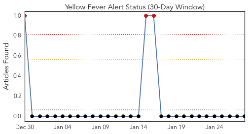
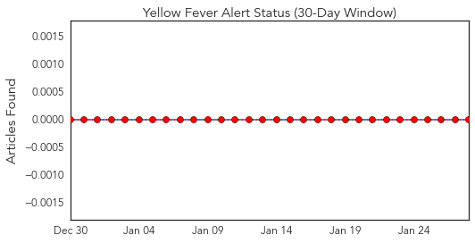
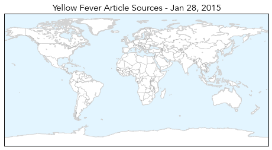
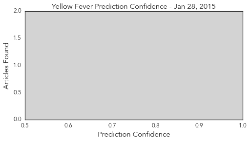
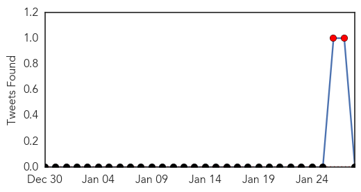
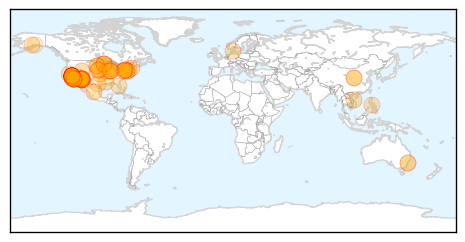
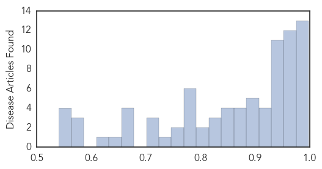

Yellow Fever
30-Day Web Trend
3 alerts, 0 warnings

30-Day Twitter Trend
0 alerts, 0 warnings

Article Locations
Article Confidences
Top Articles:
-
No articles found for Jan 28, 2015
Top Tweets:
-
No tweets found for Jan 28, 2015
Measles
30-Day Web Trend
20 alerts, 2 warnings

30-Day Twitter Trend
2 alerts, 0 warnings

Article Locations
Article Confidences
Top Articles:
- 0.998
- U.S. Measles Outbreak Now Numbers 87 Cases
- 0.998
- Measles Outbreak Grows to 87 Cases
- 0.998
- U.S. Measles Outbreak Now Numbers 87 Cases
- 0.997
- U.S. Measles Outbreak Now Numbers 87 Cases
- 0.995
- Opinion: Measles outbreak underscores importance of vaccination
- 0.988
- Official: Health Department ‘hyper-vigilant watching for measles cases’ : Local
- 0.987
- Arizona monitoring 1,000 people who could have been exposed to measles
- 0.985
- 7 AZ residents sickened with measles no longer infectious
- 0.984
- Possible Measles Exposure in Cumberland Co. Resident
- 0.983
- Health department warns of Shippensburg measles case
- 0.981
- BEN BOYCHUK: An epidemic of irresponsibility
- 0.980
- Measles Outbreak Spreads to Chicago Area, Number Exposed Continues to Grow
- 0.978
- Measles case confirmed at University of Minnesota
- 0.974
- ‘Critical Point’ Reached As Hundreds Face Possible Exposure
- 0.972
- Measles 101: Signs, symptoms and prevention
- 0.972
- Arizona measles outbreak reaches 'critical point'
- 0.971
- 2 more Arizona measles cases tied to Disneyland
- 0.970
- Measles Outbreak Linked to Disneyland May Have Reached Illinois
- 0.968
- HEALTH: Desert school sends home 66 unvaccinated students
- 0.965
- California measles outbreak: What you need to know
- 0.960
- U student develops measles; doctors alerted
- 0.960
- Disneyland measles outbreak
- 0.960
- No Additional Measles Cases Reported In El Paso County
- 0.957
- Confirmed measles case in Twin Cities
- 0.953
- Arizona monitoring 1,000 people for measles
- 0.952
- Kaiser calling parents who refused to vaccinate against measles
- 0.949
- State health official says vaccinations are important
- 0.949
- Sioux Falls child contracts measles, not linked to Mitchell cases
- 0.947
- Potential measles exposure reported in Susquehanna Valley
- 0.945
- U of M student has the measles, officials confirm
- 0.944
- Department of Health stresses importance of getting vaccinated
- 0.943
- Arizona health officials monitor hundreds for measles as outbreak linked to Disneyland grows
- 0.940
- Possible measles exposure in Cumberland County, Department of Health warns
- 0.935
- yet; but can spread quickly
- 0.932
- WILDOMAR: Hospital employee diagnosed with active tuberculosis
- 0.931
- Cal State Long Beach: Student had, recovered from measles
- 0.930
- First measles case has Illinois authorities concerned
- 0.922
- Measles Outbreak Spreads to 7 States, Health Officials Warn of More Cases
- 0.911
- 195 Reasons Why the Anti-Vaccine Movement Impacts All of Us
- 0.910
- Measles outbreak at Disneyland cancels family trip
- 0.905
- Here’s a Quick Guide on Measles
- 0.899
- Measles outbreak in Beijing's high-rise building under control - Headlines, features, photo and videos from ecns.cn
- 0.893
- S.B. Health Officials Brief Media on Potential Measles Case
- 0.892
- Calif. school releases students unvaccinated for measles
- 0.892
- Calif. school releases students unvaccinated for measles
- 0.879
- Physicians encouraging parents to vaccinate children
- 0.870
- Almost 100 Cases In 8 States, 1000 Monitored In Arizona
- 0.869
- Rubella outbreak occurs at company in southern Vietnam
- 0.864
- Measles cases spread to northern California and back east; Kern Co. doctors say to take caution
- 0.857
- University of Minn. student tests positive for measles
Showing top 50 articles...
Top Tweets:
-
No tweets found for Jan 28, 2015